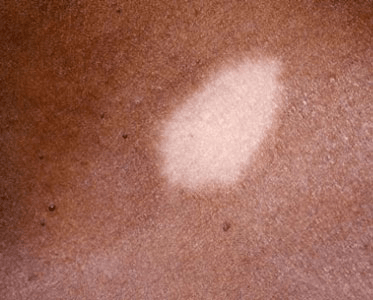

What is Post-Inflammatory Hypopigmentation?
Hypopigmentation is the absence of normal amounts of melanin (the chemical that
gives skin its color) caused by disease, injury, burns or other trauma to the skin.
Hypopigmentation can be tricky to treat. There are topical medications that
sometimes help, and light-based procedures like IPL, excimer lasers, and the
Fraxel Restore laser can also be used.
Melanin is the substance that gives skin its color, or pigment. When the skin
cells that produce melanin (melanocytes) reduce their production, the resulting
condition is known as hypopigmentation (loss of skin color). Hypopigmentation is
also known as skin depigmentation.
Post-inflammatory hypopigmentation is a loss of skin color (pigmentation) after your
skin heals from an injury. The pigment-producing cells (melanocytes) are damaged or
destroyed in the healing process.

The most common cause of hypopigmentation isdamage or trauma to the skin. Burns, infections,
pimples, blisters, scrapes, and any injuries that result in scarring can all lead to
skin discoloration.
Improperly administered skin resurfacing treatments, such as Photofacials (IPL), laser
peels, or chemical peels, can cause skin damage that results in hypopigmentation.
In situations where hypopigmentation is the result of skin inflammation or damage, the condition
may be referred to as post-inflammatory hypopigmentation, or PIH.
This can get confusing because PIH is also used to refer to post-inflammatory hyperpigmentation,
a skin condition where pigmentation is increased, not decreased.
Some chronic skin disorders can also cause hypopigmentation, such as the following:
- Albinism - characterized by colorless skin, hair, and eyes that occurs because
skin cells produce little or no melanin
- Vitiligo - characterized by patchy loss of skin color that occurs when skin cells
that produce melanin die or stop production for no known reason
- Seborrheic dermatitis - an inflammatory skin disease characterized by red, scaly,
itchy patches of skin in areas prone to oiliness
- Tinea versicolor - caused by fungal (yeast) infection and characterized by scaly,
itchy patches of lighter or pinkish skin
- Pityriasis alba - most commonly affects children and is characterized by
colorless, scaly skin patches
Anyone can experience pigment loss, but it is often more prominent in darker-skinned
people due to the contrast with their normal skin color. It can occur with any skin
injury (burns, cuts, or surgery) or with many skin disorders (acne, eczema, chickenpox,
seborrheic dermatitis, and others). Some medications may cause skin lightening in
dark-skinned people (eg, strong cortisone creams or benzoyl peroxide products).
One or more areas of white or lighter areas of skin. The size, shape, and area(s)
affected depend upon the cause.
Stop any creams or lotions with benzoyl peroxide or strong cortisone. If there are
only a few areas and you have no underlying skin problem, no treatment is needed.
In mild cases, the skin restores pigment on its own.
Seek medical care if you have multiple unexplained, lighter skin areas;
if you have a single lighter skin area with no history of previous injury;
or if you have a lighter skin area that is numb or has lost sensation or feeling.
Seek medical care if you have any skin condition that leaves multiple
lighter skin spots.
Hypopigmentation treatment options are often limited. Treating post-inflammatory
hypopigmentation may involve the use of topical corticosteroids or tars (topical cream),
light or laser treatment, or surgical skin grafting.
Although the numerous lasers and other light-based treatments available today are
often perceived as a cosmetic cure-alls, IPL, excimer lasers, and the Fraxel
Restore laser are the only light-based procedures that have been suggested by
the doctors on RealSelf for hypopigmentation treatment.
If a chronic skin disorder is causing hypopigmentation, then treatment will likely
involve topical prescription medications. For hypopigmentation that is unresponsive
to medications, camouflaging with cosmetic tattooing or permanent makeup may
be the best option.
For patients who experience extreme hypopigmentation on over half of their body
(a rare occurrence of vitiligo), overall depigmentation is an option.
Topical medications, such as hydroquinone, TriLuma, and other skin lightening
agents, may be used to bleach skin not affected by hypopigmentation so that it
can blend in better with hypopigmented skin (think the late, great Michael Jackson).